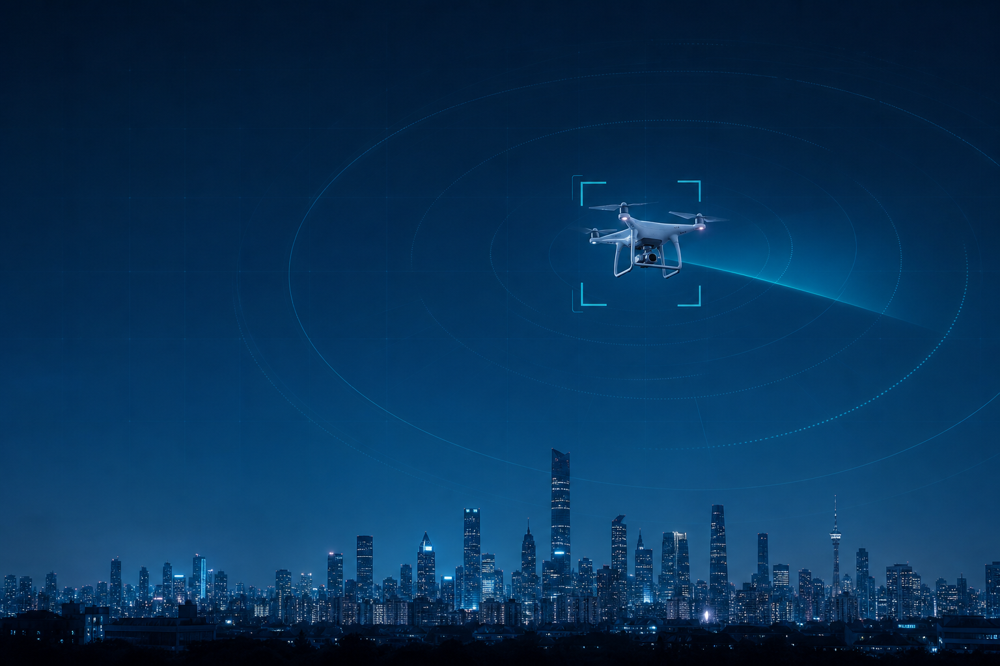
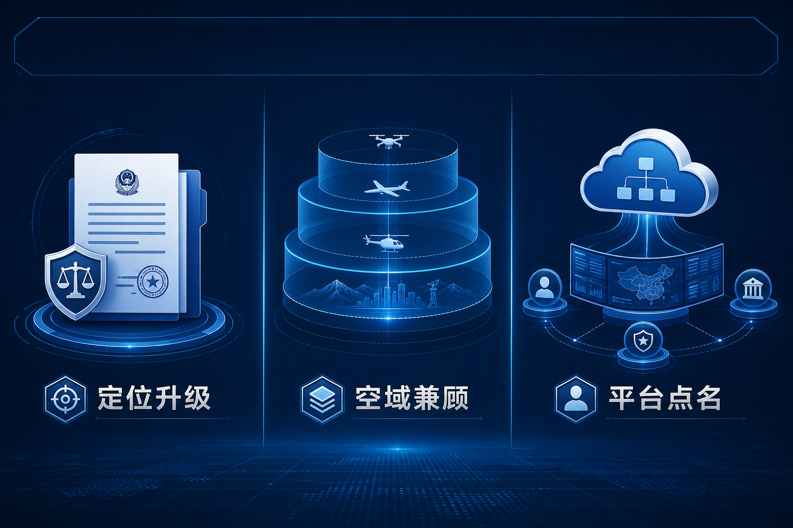

导读 本文面向公安及城市低空安全管理部门，解读中山低空经济三年行动方案中的产业目标、基建路径与安全监管表述，提炼地方方案落地时治理侧该同步补齐的能力。
导语：地方方案里，产业数字很响，监管条款更要盯住
据中山网报道，7月20日中山市公开发布《中山市低空经济高质量发展行动方案（2026-2028年）》。方案按「需求牵引、航路先行、设施支撑、网联保障」思路，围绕基建、产业、场景、配套四大板块部署17项重点任务，并提出打造粤港澳大湾区低空制造与创新应用高地。
对产业侧，这是一张清晰的路线图。
对公安和城市低空安全管理部门，真正要读的是另一层：场景起来之后，飞行安全监管、标准体系与日常处置能力，有没有被写成可执行事项？
新修订《民用航空法》已自2026年7月1日起施行，上位法推动建设民用低空飞行和应用相关监管服务平台。地方行动方案若只谈产值与起降点，不管「看见—定级—处置」，规模越大，压力越大。
一 方案改了什么：三步走背后是什么节奏？
据中山网对公开方案的梳理，产业规模给出明确「三步走」。
• 第一，到2026年底：打造物流配送、应急救援、低空文旅等示范场景10个以上，建成无人机起降点100个，飞行试验基地、检验检测平台等质量技术设施投入运营，低空产业规模突破50亿元。
• 第二，到2028年：培育特色应用场景30个以上，建成2处枢纽型低空起降点，特色应用场景覆盖全域，产业规模突破200亿元。
• 第三，到「十五五」期末：布局建设1个一级低空垂直起降设施，累计建成300个起降点，培育制造业单项冠军、专精特新企业10家以上，产业规模突破300亿元。
基建侧，中山提出构建「4硬1软」低空基础设施体系；场景侧覆盖同城配送、跨城跨海货运、血液制品转运、载人航线试点、低空文旅，以及违建巡查、河道监测、农林植保等城市治理应用。

场景加密之后，城市更需要持续可见的低空态势
产业目标写得越细，越说明低空飞行会从「偶发」变成「高频」。
二 对监管方意味着什么：场景清单就是压力清单
地方方案的价值，不只在产值数字，更在它把「飞什么」写清楚了。飞什么一清楚，管什么就必须跟上。
• 第一，物流与医疗航线意味着固定走廊、固定时段、固定起降点。合规飞行多了，未报备闯入、航线冲突、扰民投诉也会更容易被看见——前提是城市有持续感知与比对能力。
• 第二，文旅飞演与公众体验会抬高关注度。热度上来后，模仿飞行、围观拍摄、禁飞区误闯的概率上升，普法与执法要同步进日常，而不是只靠专项整治。
• 第三，无人机用于城市治理会形成「合法升空」常态。公安与行业管理部门更需要把报备信息、实时目标、处置权限放进同一套流程，避免「自己的无人机管得住、别人的黑飞看不见」。
公开报道还提到，中山将完善飞行安全监管与行业标准体系，并建立专班统筹、「1+N」扶持等保障机制。对城市管理者，这句话不宜一笔带过——它决定产业目标能不能安全兑现。
场景清单写完之日，就是治理能力对表之时。
三 落地视角：地方方案如何把「安全监管」写实
对照中山方案这类地方文件，建议公安与城市低空安全管理部门抓三件事。
• 第一，把起降点建设与感知覆盖一并规划。起降点加密，不等于空域自动变安全。雷达、无线电、光电等多源探测要进统一态势，对关注空域保持持续发现。
• 第二，把报备比对与威胁定级做成日常能力。示范航线、试点载人、应急物资运输，都要求能快速区分：合规飞行、未报备闯入，还是异常逼近重点目标。行业常用Ⅰ/Ⅱ/Ⅲ 级威胁判定，目的就是让处置有优先级。
• 第三，把监管服务平台当成基础设施。登记报备、态势感知、智能预警、出警调度、联动处置、数据分析，应落在同一套业务系统。

上位法与地方方案都在催促：把「管得住」写成可执行能力
羽嘉科技「猎场一号」警用低空防务智能实战平台，面向公安日常场景把「察 · 控 · 打 · 评」做成可调度闭环，兼容主流侦测反制设备，支撑重大活动值守与常态管控。
地方方案可以催热产业；真正托住产业的，是可运转的安全治理操作系统。
结 读方案，既要读产值，也要读闭环
中山三年行动方案给出了清晰的产业节奏：场景、起降点、产业集群分步推进。
对公安与城市低空安全管理部门，更关键的判断只有一句：产业目标可以逐年加码，安全能力必须同步到位。
看得见、比对得上、定得了级、处置留得下痕——地方低空经济才能在安全轨道上走稳。
— 据中山网报道；方案细节以中山市官方最新公布文本为准
—— 关于我们 ——
羽嘉科技，城市级低空安全解决方案提供商，「猎场一号」警用低空防务智能实战平台研发者。
让低空管理从「被动应对」转向「主动防控」。
免责声明：本文相关信息引自公开渠道（中山网等，方案细节以中山市官方最新公布文本为准），仅供行业交流参考，不构成任何决策依据。如有侵权请联系删除。